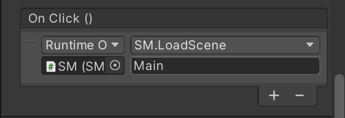
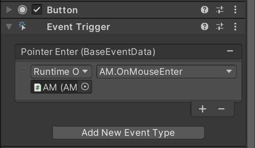
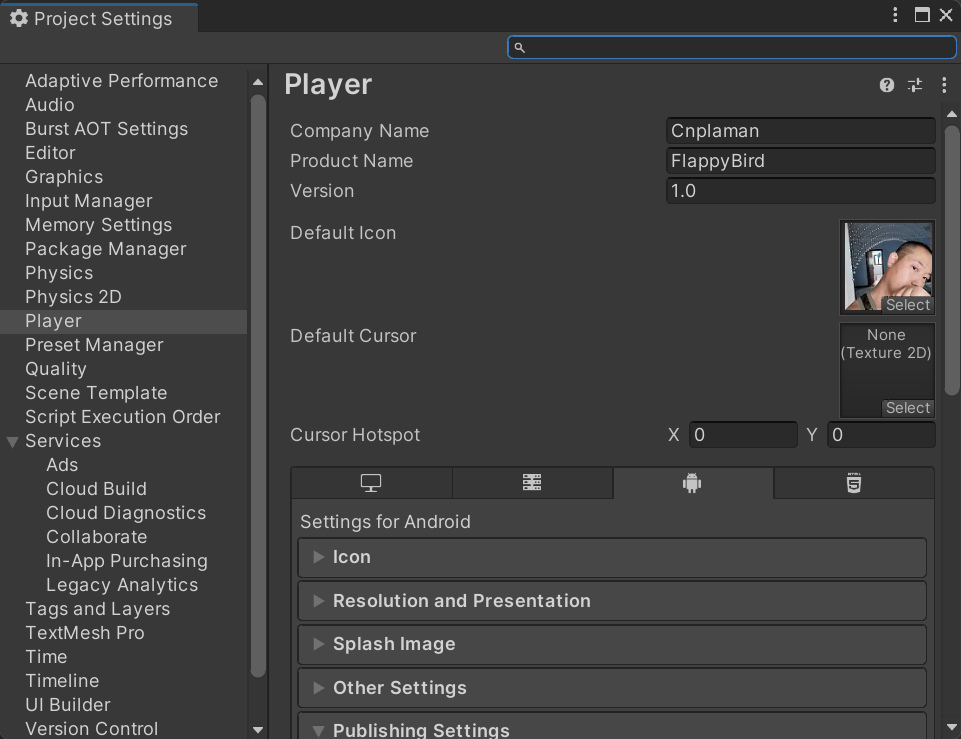

- 项目欣赏
- HTML5 基础版 HTML5 提高版 Window版 Android版
- 项目需求
- .单击鼠标使小鸟上下飞动穿过移动的柱子
- .每穿过一组柱子得1分；如果小鸟在飞行过程中撞到柱子或地面，游戏结束
- .可重复开始
- 操作技能
-
项目 Project 视图 View 组件 Component 材质 Material 脚本 Script 资源商店 Asset Store 包 Package 发布 Publish - 开发技能
-
游戏对象 GameObject 刚体 Rigidbody 碰撞 Collide 用户界面 UI 预制件 Prefab 动画 Animation 精灵图 Sprite 音频 AudioResource - 资源准备
- .完整资源包下载：flappyBird 、RuningMan
- .单独下载：字体 、精灵图 、音效资源包
- .更多资源：Unity资源商店、精灵网sprite resource
- []
- .创建项目
- .处理素材
- []
- .精灵图 Sprites
- .分辨率 Resolution
- .相机 Camera
- []创建项目
- 1.创建2D项目、各种文件夹，如脚本Script、动画Anim、材质Material、预制件Prefab等等；场景Scenes文件夹默认由系统创建
- 2.修改默认场景名SampleScene为Main
- 3.导入素材：导入图片、音频、字体或资源包等素材，并分类存放；开发过程中，也可以随时导入
- 4.设置游戏分辨率：在Game窗口中，根据产品定位设置分辨率，这里选择9:16比例；如果没有，可以单击下部的+号进行添加
- 5.设置相机大小
- 6.根据需要调整为合适的布局Layout
- [ ]分辨率、相机和布局，通常要结合素材进行调整；如果不确定，可以等素材处理完毕后根据主素材大小再进行调整
- 在Game窗口中调整游戏分辨率
- 调整布局
- []素材处理-精灵图
- []将各个图片元素剥离开来，单独使用
- 1.导入/选择素材：将图片素材拖入项目或选择项目中的图片素材
- 2.转换模式：如果是默认模式Default，需要调整为精灵叠加模式才可以切割
- 默认模式
- 叠加模式
- 3.切割素材：可以自动切割或手动切割；切割出小鸟、地面和背景、金币等游戏素材；建议先使用自动切割，再根据需要单独调整某一部分；使用鼠标中键或拖动窗口上方缩放栏可以缩放大小，便于更加清楚的观察素材
- 选择自动切割并应用
- 素材被切割为诺干部分
- 单独调整某一部分
- 4.调整游戏分辨率：主素材背景精灵大小为144*256，是9：16的比例，为了等比例缩放游戏，在游戏Game中选择9:16的比例
- 指定游戏分辨率
- 5.调整相机：拖动背景精灵到场景Scene作为参考，reset；选择相机，根据背景精灵调整相机控点至其大小刚好包含背景；不要缩放图片精灵去适应相机
- 调整相机前
- 调整相机后
- 6.选择合适的布局
- []如果3D项目中使用精灵编辑器Sprite Editor，需要单独下载-窗口Window→包管理器Package Manager安装2D Sprite组件
- 没有Sprite Editor
- 下载Sprite Editor
- []
- .创建地面循环动画
- .创建背景循环动画
- .创建小鸟循环动画
- []
- .动画组件 Animation
- .层级 Order
- .容器对象 Empty
- []地面动画
- 1.在层级Hierarchy创建空对象为Ground，reset
- 2.将地面精灵拖入Ground，调整至场景Scene底部，可以使用监视Inspector精准定位；如果被背景遮挡，请调整地面的层级Order为更大一点的数字
- 在Game窗口中调整游戏分辨率
- 3.选择游戏对象Ground[不是地面精灵]，按CTRL+6或Window->Animation->Animation，打开动画编辑窗口
- 动画编辑器窗口
- 4.单击“创建Create"，系统提示要先保存动画，选择相应的文件夹，使用语义化的名字保存，如GroundMov.anim
- 5.创建动画：单击红色的录制按钮，开始创建动画；后续的设置都将被系统记录下来，作为动画的一部分
- 6.指定动画时长：单击时间轴某个位置，如1:00处，利用场景Scene中的移动工具移动Ground对象右边和背景对齐，动画系统会自动创建俩个位置之间的动画；单击播放按钮，查看Ground对象的移动效果；再次单击播放按钮停止播放动画；使用鼠标滚轮缩放可以调整时间轴长度
- 创建动画
- 7.调整动画过程：默认是非线性的，不是匀速。分别右键单击起始帧和结束帧，将两端动画过渡属性设置为线性linear
- 线性效果
- 8.设置动画循环。默认是循环动画；点击资源Assets中动画图标，勾选Loop Time；另外一个图标是动画的状态机，用以创作可控制的动画
- 动画器
- 动画状态机
- 9.更多动画效果，可以通过单击时间轴增加关键帧实现
- []背景动画
- .匀速动画；制作过程同地面动画
- .仍然需要空对象作为容器，但是需要两块背景精灵水平无缝排列实现从右到左的移动
- .为了呈现视觉差，地面移动速度要快于背景移动速度
- []小鸟动画
- .选择三个小鸟精灵，一起拖到场景Sence中间偏上靠左位置，系统自动生成动画，输入动画名称后保存，如fly.anim；同时修改层级Hierarchy中对象名字为Bird
- .目前项目游戏Game和层级Hierarchy结构如下图
- 小鸟动画
- 层级Hierarchy
- []
- .鼠标点击时候，给小鸟添加向上的力，使其向上飞起来，避免因重力而掉下去；如果掉下去和地面发生碰撞
- 目标1：掉下去-刚体rigidbody
- 目标2：飞起来-力force
- 目标3：撞上去-碰撞collider
- []
- .刚体组件 RigidBody
- .生命周期函数 Start()、Update()
- .向量 Vector2、Vector3
- .力 AddForce()
- .速度 velocity
- .碰撞组件 Collider
- .鼠标单击事件 GetMouseButtonDown()
- .API文档的使用
- []小鸟飞行控制
- 1.为小鸟添加刚体组件RIgidBody 2D
- 2.为小鸟添加脚本Bird.cs，声明刚体变量和施加的力，并在鼠标单击事件中处理向上飞的逻辑
- 方案1：公有变量public；声明为公有变量，方便通过 拖动 对象的方式赋值，调试时，也可以随时修改变量值
- [参考代码]使用二维常量vector2.zero和vector2.up
-
using System.Collections; using System.Collections.Generic; using UnityEngine; public class Bird : MonoBehaviour { public Rigidbody2D rb; public float force; void Start() { } void Update() { if(Input.GetMouseButtonDown(0)) { rb.velocity = Vector2.zero; rb.AddForce(Vector2.up*force); } } } - 3.拖动小鸟的刚体组件到脚本暴露的变量窗口，设置力force[100左右]，运行游戏 ，查看小鸟飞行情况，并根据需要调整力force；注意到小鸟下落时并不会被地面拦住。这是因为我们还没有给小鸟和地面添加碰撞组件
- 方案2：私有变量private；声明私有变量private，需要在Start()中初始化[如果不显式的指定public，则默认为私有变量]
- [参考代码]注意力的变化-构造二维向量
-
using System.Collections; using System.Collections.Generic; using UnityEngine; public class Demo : MonoBehaviour { Rigidbody2D rb; float force; void Start() { rb = GetComponent<Rigidbody2D>(); force = 100f; } void Update() { if(Input.GetMouseButtonDown(0)) { rb.velocity=Vector2.zero; rb.AddForce(new Vector2(0,force)); } } } - []小鸟碰撞
- 1.为小鸟添加圆形碰撞组件Circle Collider 2D，并编辑碰撞区域，拖动控点，使其略微小于小鸟本身尺寸；如果添加椭圆碰撞Capsule Collider 2D，可以指定水平方向horizontal或垂直方向vertical
-
- 2.给地面添加方形碰撞Box Collider 2D
- 3.运行游戏 ，发现小鸟掉下来会被地面拦住；单击鼠标使其再次飞起来
- []要发生碰撞，需要双方都有碰撞组件 - 一个巴掌拍不响
- []调整小鸟刚体组件的质量Mass，体会和受力force大小的关系
- 小鸟圆形碰撞组件
- 地面方形碰撞组件
- []
- .先创建一个柱子的移动，再利用脚本动态生成多个柱子
- []
- .匀速运动 Time.deltaTime：渲染一帧所需的时间
- .重复执行函数 InvokeRepeating(fn, startTime, repeatTime)
- .动态生成对象函数 Instantiate(obj, position, direction)
- .预制件 Prefab
- .随机类 Random.Range(min, max)
- .延迟销毁对象函数 Destroy(obj, delay)
- .API文档的使用
- []单个柱子动画
- 1.创建一个空对象为Pipes，作为容器收纳柱子精灵；reset
- 2.拖动两个切分好的柱子精灵到空对象Pipes；调整位置，上下排列，中间隔开一定距离，允许小鸟飞过
- 3.分别给两个柱子精灵添加Box Collider 2D，使用默认碰撞，检测是否和小鸟发生碰撞
- 4.给Pipes添加Box Collider 2D，调整大小，置于上下柱子精灵空隙的右侧；使用碰撞触发，用来检测小鸟是否成功飞过
- 触发碰撞用来得分
- 触发碰撞
- 5.创建脚本Pipe.cs并挂载给对象Pipes，生成柱子从右向左的移动动画，其中注释部分是实现移动的其它方式，本质上都是一样的；也可以不使用脚本，使用Animation创建动画
-
using System.Collections; using System.Collections.Generic; using UnityEngine; public class Pipe : MonoBehaviour { public float speed; void Update() { //方案1：使用position //transform.position += Vector2.left*speed * Time.deltaTime; //方案2：使用position //transform.position += Vector3.left*speed * Time.deltaTime; //方案3：构造新的位置属性position //transform.Translate(-speed * Time.deltaTime, 0, 0); //方案4：构造新的Vector2位置向量 //transform.Translate(new Vector2(-speed * Time.deltaTime, 0)); //方案5：构造新的Vector3位置向量 //transform.Translate(new Vector3(-speed * Time.deltaTime, 0, 0)); //方案6：使用位置向量的x属性 Vector2 pos=transform.position; float x=speed*Time.deltaTime; pos.x -= x; transform.position = pos; } } - 6.运行游戏，查看柱子移动情况并调整参数
- 7.调整好参数后，将Pipes拖动到项目Project特定文件夹[如Prefab，集中管理预制件]，系统将自动创建一个当前对象的预制件；场景中的对象颜色变为蓝色，表示它是由预制件创建出来的一个实例，以便和普通对象区分；可暂时隐藏前柱子对象[隐藏而不删除的目的是为了后期修改方便]
- 8.调整各对象的层级，确保地面在最前面
- []如果柱子位置异常，请调整柱子精灵的层级。柱子容器没有层级的，因为它没有渲染成为一个组件，只是1个空对象
- 调整层级
- []柱子孵化器
- 1.创建空游戏对象PipeSpawn，reset后，拖离至舞台右侧外部，在外面源源不断的生成/孵化柱子
- 2.添加脚本孵化Spawn.cs并挂载；使用系统函数InvokeRepeating重复复制柱子，并随机调整高度偏差，最后经过一定时间后销毁对象；也可以自定义重复生成函数
- []充分利用开发环境的代码提示，并注意查看各个函数的说明和参数介绍
- [方案1]使用系统函数 InvokeRepeating
-
using System.Collections; using System.Collections.Generic; using UnityEngine; public class PipeSpawn : MonoBehaviour { public GameObject pipePrefab; public int inter; public float h; void Start() { InvokeRepeating("Spawn", 0, inter); } void Spawn() { Vector3 offset = new Vector3(0, Random.Range(-h, h), 0); GameObject prefab = Instantiate(pipePrefab, transform.position + offset, Quaternion.identity); Destroy(prefab, 5); } } - [方案2]自定义倒计时函数
-
using System.Collections; using System.Collections.Generic; using UnityEngine; public class PipeSpawn : MonoBehaviour { // Start is called before the first frame update public float maxTime = 2; public GameObject pipePrefab; public float h; float timer = 0; // Update is called once per frame void Update() { if (timer > maxTime) { Vector3 offset = new Vector3(0, Random.Range(-h, h), 0); GameObject prefab = Instantiate(pipePrefab, transform.position + offset, Quaternion.identity); Destroy(prefab, 5); timer = 0; } timer += Time.deltaTime; } } - []如果使用Random有告警信息，如：'Random' is an ambiguous reference between 'UnityEngine.Random' and 'System.Random'，是命名空间System和UnityEngine有冲突，请指定命名空间并使用
-
Vector3 offset = new Vector3(0, UnityEngine.Random.Range(-h, h), 0);
- 或
-
using Random=UnityEngine.Random;
- []
- .利用Canvas创建各种提示信息和操作按钮
- []
- . 画布组件 Canvas
- . 图像组件 Image
- . 文本组件 Text
- . 按钮组件 Button
- . 阴影组件 Shadow
- . 场景 Scene
- []开始场景UI
- 1.选择场景文件夹Scene，新键场景为Start，双击进入
- 2.创建画布Canvas为CanvasStart，指定按照屏幕尺寸等比例缩放，并指定参考分辨率为144*256
- 设备画布比例尺寸
- 3.添加1个图像Image为Bg，缩放至铺满整个屏幕，指定背景图片
- 4.添加1个Text为Logo，用于显示游戏名字Flappy Bird；设置颜色、大小、字体，调整至中间偏上位置，使用阴影组件增加效果；也可以使用图像，还可以做成动画
- 5.添加2个Button分别为开始Start和退出Quit，背景颜色略透明为100
- 6.添加1个Text为Copyright，显示版权信息，如学号和姓名；最终效果为
- 开始场景结构
- 开始场景效果
- []游戏过程UI
- .一个得分UI
- .1组结束UI，包括游戏结束信息、重玩按钮Replay、退出按钮Quit和积分榜按钮Rank
- 1.选择主场景Main，双击进入
- 2.创建画布Canvas为CanvasScore；设置画布比例同开始场景
- 3.添加1个Text为scoreTxt，显示得分，调整大小、位置/顶部、字体、字号，颜色等属性；修改默认文本为0
- 4.添加1个面板Panel为Ending，作为容器，包括：
- .添加2个Image分别使用精灵图中的Game和Over图片作为图片源，并使用原始尺寸/保持和图片大小一致
- .添加3个按钮，分别为：重玩按钮Replay、退出按钮Quit和积分榜按钮Rank；背景颜色略透明为100
- Image和图片大小保持一致
- 游戏得分和结束UI结构
- 游戏得分和结束UI效果
- []结束场景UI
- 1.选择场景文件夹Scene，新键场景End，双击进入
- 2.创建画布Canvas为CanvasEnd；设置画布比例同开始场景
- 3.添加1个图像Image为Bg，缩放至铺满整个屏幕，指定较深颜色的背景图片
- 4.添加1个Image作为提示信息，选择精灵图中的Game Over作为图片源，并使用原始尺寸/保持一致
- 5.添加1个Image为Rank，作为容器，包括：
- .银币图片Image：银牌级；采用精灵图的银币图片作为源，使用原始尺寸
- .金币图片Image：金牌级；采用精灵图的金币图片作为源，使用原始尺寸
- .得分文本Text
- 6.添加2个Button分别作为重玩按钮Replay和退出按钮Quit
- 7.将金币和银币设置为不可见[灰色]，根据游戏得分显示对应的奖牌类型
- 结束场景结构
- 结束场景效果
- []
- .修改小鸟脚本，隐藏结束UI、增加普通碰撞、触发碰撞的业务逻辑
- .游戏过程可能的碰撞有：
- 1.死亡碰撞：普通碰撞，包括小鸟和柱子的碰撞、小鸟和地面碰撞；当死亡碰撞发生时：游戏结束显示结束UI
- 2.得分碰撞：触发碰撞，小鸟通过柱子的碰撞触发；当得分碰撞发生时，分数加1
- []
- .标签 Tag
- .碰撞 Collide
- .时间管理 timeScale
- .场景管理 SceneManagement
- []添加标签
- .通过标签来判定和谁发生了碰撞
- .如果操作的对象是预制件，记得更新
- 1.为柱子容器|得分区域添加标签Score
- 2.为柱子容器里的柱子添加标签Pipe
- 3.为地面添加标签Ground
- 添加标签
- []碰撞业务逻辑
- 1.打开小鸟脚本Bird.cs：
- .增加得分文本scoreTxt和静态得分变量score；声明为静态变量的目的是便于其它对象直接使用
- .引入公有变量Ending[结束UI]并隐藏；也可以手动在监视Inspector隐藏
- .增加死亡碰撞OnCollisionEnter2D：和柱子或地面发生碰撞时，小鸟死亡，显示结束UI，游戏停止timeScale为0。重新开始时必须重启时间，所以在Start()中要显式的设置timeScale为1
- .增加得分碰撞OnTriggerEnter2D：小鸟飞过柱子的得分区域时，得分，分数加1，并由UI显示出来
-
public Text scoreTxt; public static int score; public GameObject ending; void Start() { Time.timeScale = 1; ending.SetActive(false); score = 0; } private void OnCollisionEnter2D(Collision2D collision) { string tag = collision.collider.tag; if (tag == "Pipe" || tag == "Ground") { print(tag); ending.SetActive(true); Time.timeScale = 0f; } } private void OnTriggerEnter2D(Collider2D collision) { string tag = collision.tag; if (tag == "Score") { print(tag); score++; scoreTxt.text = score.ToString(); } } - 2.运行游戏，单击鼠标让小鸟飞起来，查看控制台的输出、得分情况、死亡情况
- []场景管理SM
- 1.创建一个空对象作为场景管理SM
- 2.创建脚本SM.cs并挂载到SM对象；增加场景的切换业务逻辑；场景的使用需要引入场景包SceneManagement；这个脚本也可以被其它场景使用
-
using System; using System.Collections; using System.Collections.Generic; using UnityEngine; using UnityEngine.SceneManagement; public class SM : MonoBehaviour { public void LoadScene(String name) { SceneManager.LoadScene(name); } public void Quit() { Application.Quit(); } } - 3.为Ending的重玩按钮Replay、积分榜按钮Rank和退出按钮Quit指定SM中的事件
-  重玩按钮事件
-
 积分榜按钮事件
积分榜按钮事件
- 退出按钮事件
- 4.选择菜单File→发布设置Build Settings...，将3个场景拖入，并调整好顺序；也可以在界面部分创建完毕后，在发布设置添加
- 添加场景到发布设置
- 7.运行游戏，查看游戏过程中的场景调整情况
- []开始场景
- 1.创建一个空对象为SM，绑定SM.cs[添加脚本组件，关联SM.cs]
- 2.分别为按钮Start和按钮Quit指定对象SM中的关联脚本SM.cs的对应事件
- []结束场景
- 任务1.分配按钮逻辑：同其它场景，新建一个空对象SM，绑定SM.cs；给按钮Replay和按钮Quit指定相应的事件
- 任务2.奖牌榜逻辑：获取得分并根据得分显式对应的金牌类型，如超过10分，为金牌；否则为银牌，由专门的对象和脚本处理
- 1.创建一个空对象为GameManager
- 2.创建一个脚本GameManager.cs，完成数据显式和奖牌显式的逻辑；游戏管理器脚本比较特殊，会显式为一个银色的齿轮
- .增加对银牌图像的引用
- .增加对金牌图像的引用
- .增加对显式得分文本的引用
- .因为小鸟脚本中，得分score是一个公有静态变量，所以可以直接以的类的形式使用：判断大小，显式不同的奖牌类型
-
using System.Collections; using System.Collections.Generic; using UnityEngine; using UnityEngine.UI; public class GameManager : MonoBehaviour { public GameObject silver; public GameObject gold; public Text scoreTxt; void Start() { scoreTxt.text=Bird.score.ToString(); if(Bird.score>=10) { gold.SetActive(true); } else { silver.SetActive(true); } } } - GM暴露的变量

- []
- .为小鸟添加飞行、碰撞和得分等音效
- .为游戏添加背景音效
- .为操作按钮添加交互音效
- []
- .音频源组件 AudioSource
- .音频剪辑组件 AudioClip
- .事件触发组件 Event Trigger
- []导入音效资源包
- 1.选择推送的音效资源包 [点击下载 ]；也可以自己准备
- 2.直接拖动到项目Project或从菜单Assets→Import Package→Custom Package选择并导入，确定后，会多出一个音效资源文件夹；单击每个音频文件，试听效果
- 导入音效资源包
- []小鸟飞动音效
- [思路]每次鼠标单击小鸟飞起来时，播放音效
- 1.选择小鸟对象，增加音频源组件Audio Source，指定音频剪辑fly，取消自动播放
- 小鸟脚本Bird.cs的飞行音频源组件和音频剪辑
- 2.修改小鸟脚本Bird.cs，定义公有音频源组件，并在鼠标单击事件中定义音效播放逻辑
-
public AudioSource player; // if(Input.GetMouseButton(0) && Time.timeScale==1) { player.Play(); } - 3.为脚本暴露的公有变量指定小鸟的音频源组件，运行游戏，点击鼠标，试听小鸟飞动的音效
- []小鸟得分音效
- [思路]在小鸟的触发碰撞中播放得分音效
- 1.修改小鸟脚本Bird.cs，增加公有的得分音频剪辑scoreAudioClip并指定音频剪辑get
- 2.在触发碰撞中播放音效
-
public AudioClip scoreAudioClip; // private void OnTriggerEnter2D(Collider2D collision) { player.PlayOneShot(scoreAudioClip); } - []小鸟死亡音效
- [思路]在小鸟的普通碰撞中播放死亡音效，具体操作同小鸟得分音效
- 1.修改小鸟脚本Bird.cs，增加公有的死亡音频剪辑deadAudioClip并指定音频剪辑hit
- 2.在普通碰撞中播放音效
-
public AudioClip deadAudioClip; // private void OnCollisionEnter2D(Collision2D collision) { player.PlayOneShot(deadAudioClip); } - 小鸟脚本Bird.cs的得分和死亡音频剪辑
- []开始场景背景音效
- 1.选择开始场景
- 2.在层级Hierarchy空白处，右键单击，添加音频源对象Audio Source为BGM。也可以选择某个对象如相机Camera，为其添加Audio Source组件；注意对象和组件的区分
- 3.在监视Inspector种指定音频剪辑Audio Clip，并勾选循环Loop，设置合适的音量大小Volume
- 指定背景音效剪辑
- 4.点击播放按钮试听音效效果；也可以直接点击顶部工具栏的的音效开关直接试听
- []结束场景背景音效
- .同开始场景背景音效[略]
- []按钮音效[进阶]
- [目的] 鼠标滑过开始按钮Start和退出按钮Quit时，增加音效
- [方法] 使用单独的游戏对象集成音效的控制脚本，为按钮指定对应的事件
- 1.选择开始场景[其它场景类似]
- 2.创建空对象AM，添加音频源组件Audio Source，取消自动播放
- 3.创建脚本AM.cs，声明公有音频源和音频剪辑，定义音效的播放函数，最后将脚本拖给对象AM，并为脚本暴露的公有变量指定为对象AM的音频源和某个音频文件
-
using System.Collections; using System.Collections.Generic; using UnityEngine; public class AM : MonoBehaviour { public AudioSource player; public AudioClip clip; public void OnMouseEnter() { player.PlayOneShot(clip); } } - 指定公有变量
- 4.选择某个按钮：添加事件触发组件Event Trigger；UI不能直接使用传统的onMouseEnter这些鼠标事件。单击增加事件类型，选择PointerEnter；为按钮的鼠标滑过事件中指定对象AM中相应的方法
- 添加事件
-  指定事件
- 5.另外一个按钮同样设置；完毕后运行游戏聆听鼠标划过效果
- 6.使用同样的方法，为其它场景的按钮指定鼠标滑过音效
- 1.平台切换为Android；如果第一次，需要下载依赖，详情请参看 基本使用 发布一节内容
- 2.将所有场景拖拽至发布
- 添加场景
- 3.播放设置：公司、产品、版本、LOGO等基本信息；请准备一张图片作为产品的LOGO，发布时将被当作APP的图标
-  添加场景
- 4.发布成功后，将apk分享给其它小伙伴，一起享受成功的喜悦吧
- 5.游戏截图[部分]
- 银牌
- 金牌
- 开发技能 Skills
- .基本视图：场景Scene、层级Hierarchy、游戏Game、项目Project、调试Console
- .基本游戏物体：cube、sphere、plane
- .常见游戏组件：变换、材质、刚体、碰撞、音频、脚本
- .常见生命周期函数：Start()、Update()
- .预制件：open修改；override修改
- .脚本控制游戏对象/组件的基本、变量的传递
- .常用方法：Translate()、addForce()、InvokeRepeating()、Destroy()
- .UI：Text、Image、Panel、Button
- .动画 Animation
- .发布Building：桌面端Window、安卓Android、移动端网页WEBGL
- 计算思维 Computing
-
架构设计流程控制规范开发团队合作
- 几点提升
- 1.动画设计
- . 游戏LOGO
- . 得分动画
- . 碰撞动画
- 2.功能设计
- . 增加钻石，碰撞后，加分
- . 增加怪物，碰撞后，减分
- . 在开始场景中增加游戏玩法说明
- . 在主场景增加暂停功能
- 3.其它
- .用户登陆
- .数据保存